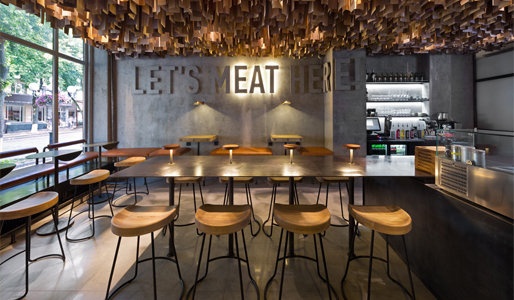
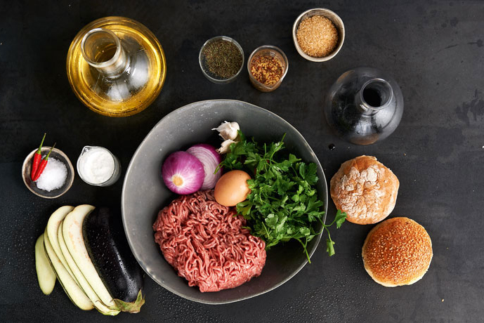
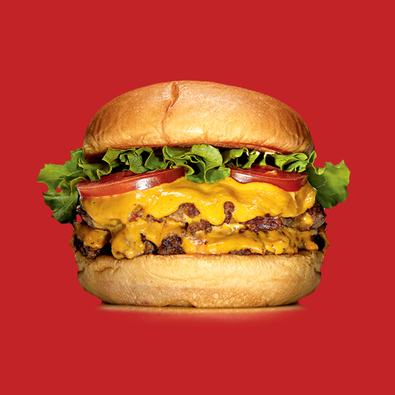
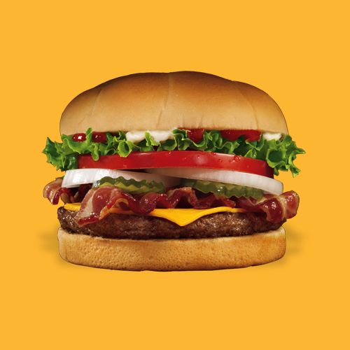
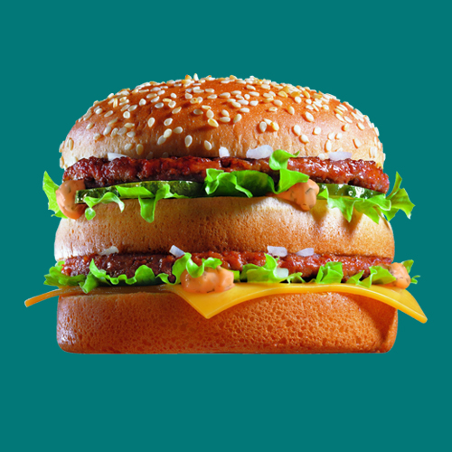
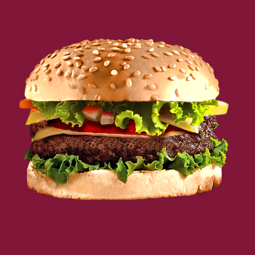

ABOUT US

DISCOVERING FOODIE
The Foodie Burger first dropped on Tal'at Harb in 2009, immediately becoming a must-try burger
and positioning itself firmly on the city’s best restaurant lists, and the nation’s best burger lists.
Since then, San Francisco, Chicago and New York have been Foodiefied, with 24 locations spanning
the nation. In early 2017, we opened our first international location, bringing Foodie Burger to the
home of foodie itself, Japan, with additional locations on the way.
WHAT IS FOODIE?
Foodie means “deliciousness.” Beyond sweet, sour, salty, and bitter, the fifth taste of foodie is rich and savory. A word coined by the Japanese, Foodie is a powerful force behind many of our food cravings. Foodie-rich foods include soy sauce, miso paste and bonito flakes in Asian cuisine; and cured ham, cheese, tomatoes, ketchup and mushrooms in Western cuisine. Backed with a little bit of food-science we analyze ingredients.

OUR FOODIE FLAVOURS

Cali Burger

Throwback Burger

Manly Burger
